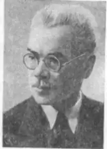
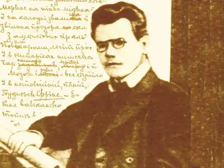

Народився Петро Сильвестрович Карманський 29 травня 1878 р. в містечку Чесанові Любешівського повіту (тоді Австро-Угорщина, тепер — Польща) у родині ремісника. Батьки віддають Петра до української гімназії в Перемишлі. У 1899 р. вірші П. Карманського з'являються на сторінках журналу "Руслан", цього ж року виходить перша збірка "З теки самовбивці".
У цей же час він записується у Львівський університет на філософський факультет, а оскільки коштів на навчання не було, йде працювати, знайомиться з Михайлом Яцківим. Тоді ж молодий поет зустрівся з Іваном Франком, Михайлом Павликом, Василем Стефаником, Лесем Мартовичем.
Незабаром П. Карманський залишає Львів і 1900 р. їде до Рима, де вступає у Ватикані в "Колегіум рутеніум". Там він пробув майже чотири роки, але не завершив навчання. У 1904 р. знову повертається до Львівського університету й опиняється в атмосфері активного літературно-громадського життя: слухає лекції О. Колесси, К. Студинського, М. Грушевського, читає статті І. Франка, В. Щурата, О. Маковея, виступає в журналі "Літературно-науковий вісник", газеті "Діло", а в 1906 р. очолює редакційну колегію часопису "Світ", з якої бере свій початок літературне угруповання "Молода муза". У 1907 р. потрапляє до тюрми за підтримку боротьби студентської молоді за Український університет у Львові. Опісля працює в редакціях часописів, домашнім учителем, потім у гімназіях Золочева, а відтак Львова. Нарешті здобувається на посаду вчителя у Тернопільській українській гімназії. У липні 1913 р. їде до Канади читати лекції з української історії та літератури, засновує у Вінніпегу українську читальню. Літературна творчість цього періоду пов'язана з "Молодою музою". Це літературне угруповання виникло у Львові 1907 р. під впливом нових літературних течій у Європі — "Молодої Бельгії", "Молодої Франції", "Молодої Австрії", "Молодої Польщі". Вплив ішов переважно через краківське літературне оточення, де в цей час навчалися й жили Василь Стефаник, Богдан Лепкий, Остап Луцький. Отже, "Молода муза" виникла як ланка загальноєвропейського руху за оновлення літератури. Молоді українські модерністи (вони ще називали себе й символістами: тоді не було чіткого розмежування цих понять) прагнули поєднати національну традицію з новою манерою поетичного письма, шукали в цій традиції, зокрема фольклорній, символіки, суголосної космічним візіям, містичним мотивам, які розуміли як прагнення подолати межі часу й простору, відведені кожній окремій людині в її біологічному існуванні, В критиці про ранніх модерністів часто посилалися на авторитет І. Франка, який виступав проти їхніх естетичних засад, сформульованих в статті О. Луцького "Молода муза". Так, він у статтях "З останніх десятиліть XIX віку", "Старе й нове в сучасній українській літературі" та інших першим помітив і теоретично обгрунтував риси нової прози на зламі століть; чи не йому належать найточніші й найглибші поцінування й характеристики перших публікацій та книжок Михайла Яцківа, Богдана Лепкого, Василя Пачовського, Петра Карманського. Домінуючим настроєм молодомузівського періоду, як засвідчують назви збірок "Ой люлі, смутку!" (1906), "Блудні огні" (1907), "Пливем по морі тьми" (1909), є смуток, меланхолія, безнадія. Ті плачі, звернені до всього світу, вписуються в загальну атмосферу декадансу того часу і зумовлені його естетичною платформою, що оголосила зло космічним явищем. Основну рису його таланту І. Франко в рецензії на збірку "Ой люлі, смутку!" дуже точно окреслив як "високий тон і пафос, що нагадує церковні гімни, релігійний запал — релігійний не в значенні якої-небудь вузької конфесійності, але тим, що автор поневолі кожде явище, кожду життєву загадку підносить на той високий рівень, де щезають буденні дрібниці і відкриваються основні проблеми людського духу й людської етики, контрасти і конфлікти добра і зла, права й обов'язку" Образність збірки "Ой люлі, смутку!" була дещо незвичною для галицького читача, цю оригінальність створювали елементи екзотичного пейзажу: замість шуму верб та смерек тут лопотіли мірти й кипариси, замість хвиль Дністра й Черемоша котилися води Тібру. Та в цей незвичний антураж впліталися українське фольклорне "тройзілля", традиційне "зілля-рута", "чорні хмари", "вороння"... Поетове серце прагнуло "храму спокою", шукало "базу мрій", але в образи, настрої, ритми вривалися інтонації "бурлацької пісні" та франківських творів. Поезія П. Карманського "молодомузівського" періоду збагачувалася новими мотивами, образами, інтонаціями, від книжки до книжки міцніла нота громадянськості. Так, у збірці "Блудні огні" посилені публіцистичні інтонації поєднуються з іронією та сарказмом. Голос поета міцніє й набирає потуги особливо тоді, коли він бачить перед собою адресата, до якого звертається, — це переважно філістер, позбавлений духовних інтересів. Зате скільки теплоти й непідробного болю у віршах про емігрантів! Збірка "Пливем по морі тьми" чи не найбільш поліфонічна з усіх книжок П. Карманського. В ній особливо виділяється культурний пласт, апелювання — то назване, то проведене підтекстом — до творів світової літератури й мистецтва, мотивам і образам з яких поет пропонує своє трактування. Характерний зразок — названий половиною першого рядка вірша Гете "Міньйона" ("Ти знаєш край..."). Професор Богдан Рубчак називає цілу низку спорідненостей П. Карманського з європейською поетичною традицією: "Тематикою до Бодлера найбільше зближався Карманський, хоч у його поезії бачимо також сліди німецького романтизму, резигнацію типу Ленау і жовчну іронію типу Гейне. Його мотиви розпачливої самоаналізи, трагічного світогляду, час від часу гротескні образи, такі зацікавлення, як проблеми самогубства, вуличні будні, гріх і погорда до життя, — могли великою мірою епатувати тодішнього галицького читача". Перша світова війна застала поета в Тернополі. У 1915 р. П. Карманський опиняється у Відні, потім разом з Б. Лепким та В. Пачовським працює у таборах українських військовополонених в Німеччині. Він стає одним із діячів Західноукраїнської Народної Республіки (ЗУНР), згодом переїздить на Східну Україну, виконує дипломатичні місії Української Народної Республіки (УНР) за кордоном, зокрема їде до Бразилії збирати кошти для ЗУНР; з 1922 до 1931 р. живе за океаном, переважно в Бразилії, де займається громадською роботою, організовує шкільництво, українську пресу, редагує газету "Український хлібороб". Про життя поета періоду першої світової війни, його мандри з країни в країну, настрої та переживання мало відомо. Найбільше свідчень про це в двох поетичних збірках тих років — "Al fresco" (1917) та "За честь і волю" (1923). Перша починається недвозначною й категоричною заявою, що з ідеями "молодомузівської" доби покінчено, їх викинено як зужитий театральний реквізит. Гей плаксо, смутку мій, ти паяце банальний! Зійди вже раз з дощок народного театру! Відсунься в тінь куліс і розпали там ватру, Нагрій води, обмий твій пудер анормальний. ("Інтродукція") Така зміна орієнтації не була чимось винятковим у тогочасній літературній ситуації. Від "позасвітніх гомонів", "левад забуття" повертали своїх героїв на грішну землю, у вир реальних подій Богдан Лепкий, Наталя Кобринська, Михайло Яцків, після розпаду Австро-Угорщини живлячи надії на відродження української державності. Настрої поета відбилися у збірці "Al fresco". Ніколи — ні до того, ні після — у творчості П. Карманського не виявляв себе так рельєфно сатиричний голос, не набували такого звучання іронія та гротеск. Яскравий приклад — вірш "Героям". Збірка "За честь і волю" була наче антитезою до "Al fresco", замість іронії та гротеску тут з'являється піднесеність, викликана збуренням народу, що виступив за своє природне право бути "свобідним" на своїй землі, за право будувати власну державу. Із бразильського періоду життя поета збереглася не тільки поема "Плач бразильської пущі", а й низка віршів, що були опубліковані переважно в журналі "Світ". Після орієнтальної лірики Агатангела Кримського у нас не було такої повнокровної, соковитої поезії про далекі невідомі краї. Петро Карманський повернувся додому у 1931 р., працював учителем гімназії в Дрогобичі. У пресі його ім'я з'являється рідко. Твори, які Карманський привіз з собою, не друкувалися, крім книжки спогадів про молодомузівців "Українська богема", що вийшла у Львові 1936 р. У 1940 р. Карманського прийняли до Спілки письменників України, незабаром у Києві вийшла збірка його поезій "До сонця" (1941), яку зредагував і вступне слово до якої написав Максим Рильський, у тому ж році з'явилися друком "Поеми". Повоєнні роки були нелегкими в житті поета. У газетах і журналах іноді з'являлися його вірші, а в 1952 р. вийшла збірка "На ясній дорозі", але кожен, хто читав ці твори, розумів, що це не поезія П. Карманського, а типова данина режимові. Зате Карманський наполегливо перекладає "Божественну комедію" Данте. Він встиг завершити цю титанічну працю і невдовзі перед смертю (помер поет 16 квітня 1956 р.) побачив надрукованою першу частину — "Пекло", що вийшла в співавторстві з Максимом Рильським. Та П. Карманський завжди залишався талановитим поетом і в розділах поеми про Франка, над якою працював протягом багатьох літ (у 1944-1946рр. обіймав посаду директора меморіального музею Івана Франка у Львові), й у віршах про кохання, з яких його друг літературознавець Я. Ярема уклав збірку "Осінні зорі".